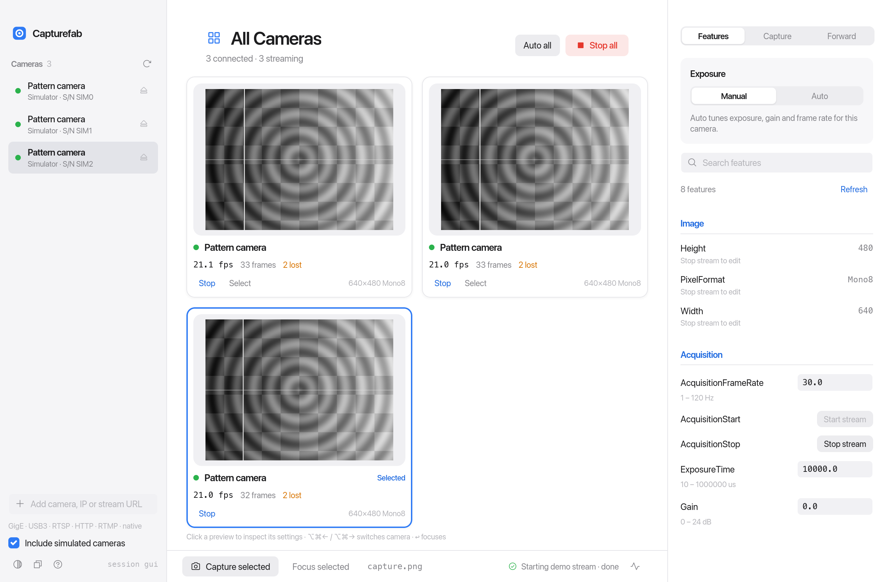
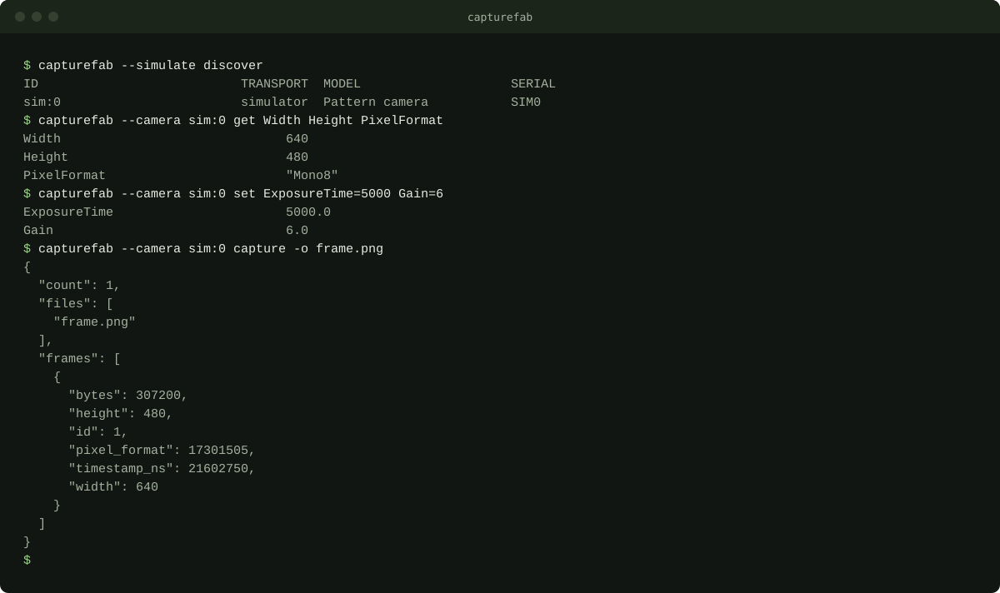

Industrial cameras, natively
GVCP/GVSP and U3V with live GenICam feature trees, packet resend and loss counters. No Aravis or vendor SDK.
capturefab discoverOpen source · MIT / source checkout
Discover, configure, capture and record from GigE Vision and USB3 Vision cameras, webcams and network streams. A native desktop app and a scriptable CLI in one self-contained binary, with no vendor SDK to install.

Features
The GigE Vision, USB3 Vision and GenICam stack is written in Rust. Webcams, streams, decoding and encoding use a bundled FFmpeg executable. Nothing else needs to be installed.
GVCP/GVSP and U3V with live GenICam feature trees, packet resend and loss counters. No Aravis or vendor SDK.
capturefab discoverBuilt-in and USB webcams, HDMI capture cards, ONVIF discovery, RTSP, SRT and video files.
capturefab nativeOpt-in per camera. Balance image quality against frame rate; it backs off on packet loss and can revert.
auto --balance 0.25Delays, intervals and timelapses with explicit timezones. Jobs report progress and can be cancelled.
capture --interval 10sRecord MKV or MP4, or publish to MediaMTX, an NVR or SRT. Hardware encoders are probed before use, with a software fallback.
forward --encoder autoSave to folders, removable drives or S3-compatible buckets. Secrets stay in the OS keychain and objects are never replaced.
--destination archiveA shared 10 GiB, 10,000-file budget by default. Existing files are never overwritten, and nothing is deleted without permission.
capturefab storageEach camera runs in its own worker with a shared-memory frame ring, so one stalled camera never blocks another.
status --jsonDownload
Pick the computer that will run Capturefab. Desktop includes the GUI and the CLI; headless is for servers, scripts and devices without a display.
Apple silicon Macs use ARM64; Intel Macs use x64. Raspberry Pi and Jetson with a 64-bit OS use Linux ARM64.
Published downloads
The release manifest is loading.
Verify the downloaded file.
| System | Processor | Build | File | Verify |
|---|---|---|---|---|
| Loading the release manifest… | ||||
Every download is checksummed in the release manifest; a target appears only after its binary is built and validated. All downloads · Build from source · Atom release feed
Quickstart
No camera nearby? Use --camera sim:0 for the built-in simulator.
Run it with no arguments to discover cameras, preview them and inspect their settings.
capturefabNetwork, USB3 Vision and host cameras, as structured results for scripts.
capturefab discover --jsonUse a discovered ID, a unique serial or a GigE camera's IP address. Feature names vary by camera; features lists the available controls.
capturefab --camera 192.168.1.10 features
capturefab --camera 192.168.1.10 get Width Height ExposureTime
capturefab --camera 192.168.1.10 set ExposureTime=5000
capturefab --camera 192.168.1.10 capture -n 10 -o framesUse a stream URL directly, or resolve an ONVIF camera's profiles.
capturefab --camera 'rtsp://camera/live' capture -o frame.png
capturefab onvif discover --json
capturefab --camera 'onvif:http://camera/onvif/device_service' capture -o onvif.pngList cameras managed by the operating system, then use the native locator.
capturefab native --json
# macOS
capturefab --camera avfoundation:0 capture -o webcam.png
# Linux, including driver-backed USB or CSI cameras
capturefab --camera v4l2:/dev/video0 capture -o webcam.png
# Windows
capturefab --camera 'dshow:video=Camera Name' capture -o webcam.pngSave a folder destination once, then capture into it on an interval.
capturefab destination add-folder usb "/Volumes/CAMDISK/Capturefab"
capturefab --camera sim:0 capture --interval 10s -n 360 -o timelapse --destination usbReport compiled-in features, network interfaces, USB access and the JPEG engines this host can use.
capturefab doctor --jsonPublish to an existing RTSP server, SRT endpoint or a local video file. Automatic encoder selection probes usable hardware and falls back to software.
capturefab --camera 192.168.1.10 forward \
--output rtsp://localhost:8554/camera \
--encoder auto --fps 30 --bitrate 4M --duration 60Automate
The desktop app exposes a local, token-authenticated session. Shell scripts and coding agents can inspect it, connect cameras, change features and capture frames while you watch.
capturefab sessions --json
capturefab --session gui status --json
capturefab --session gui connect 192.168.1.10
capturefab --session gui set ExposureTime=5000
capturefab --session gui capture -n 10 -o frames
capturefab schema --jsonUnix conventions. Structured results on stdout, diagnostics on stderr, meaningful exit codes, pipes, native shell completions and headless sessions with serve.
Agent readable. A versioned schema and session API, plus instructions for Claude Code, Codex, OpenCode and any tool that can run a CLI.

Platforms
The GUI renders with the GPU and falls back to software. Hardware video encoders and JPEG engines are used only when a real probe succeeds on the host, with a software fallback.
Tested on real hardware: Basler GigE cameras on macOS ARM64 and Jetson Linux ARM64, and a Logitech C920 webcam on macOS. USB3 Vision, ONVIF and Windows hardware are still validation targets. See the validation record.